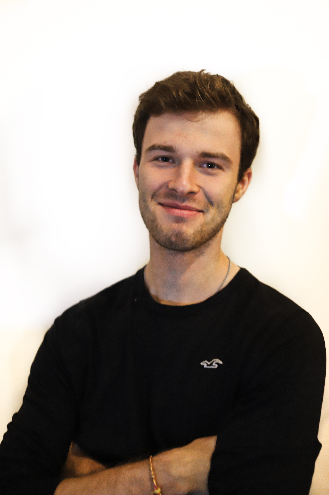

Lukas Michalicka

Summary
Education
University
- University of Hradec Kralove (2018 - 2023)
- Bachelor's degree in Management and tourism (2020 - 2023)
- Studyig applied informatics for 2 yrs (2018 - 2020)
High school
- Grammar school in Vrchlabi
Work experience
- CX Consultant at wflow.com (October 2023 - present)
- Corporate Presentation Design Consultant for SALESDOCk (October 2023 - present)
- Operation, Onboarding specialist for SALESDOCk and Black Bison (part-time) (January 2023 - October 2023)
- Internetbanking helpdesk for CSOB bank (part-time) (November 2021 - April 2022)
Skills
- HW/SW - Microsoft 365, Google workspace, Jira, ClickUp, Slack, Pipedrive, Hubspot, UML, HTML5
- Languages - English B2+, German - basics
Certifications
- CCNA Switching and routing from Oracle
- Fundamentals of agile project management (PMI)
My hobbies
Contact me